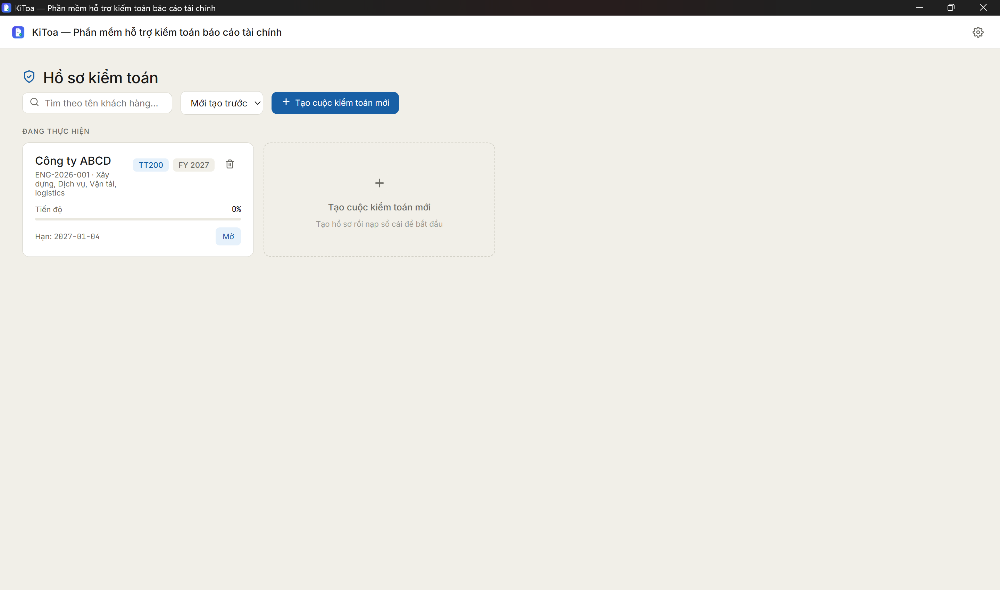
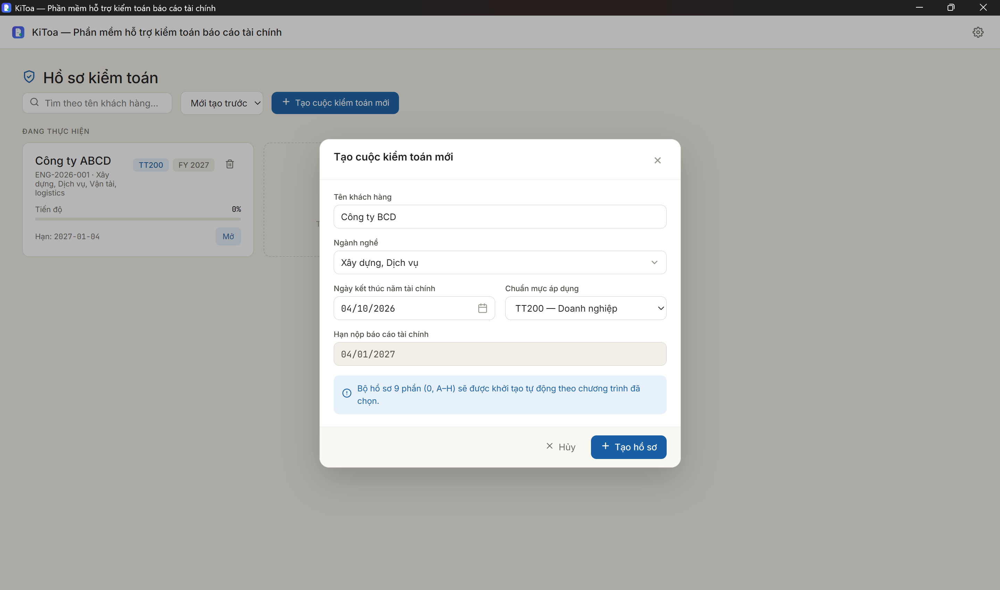
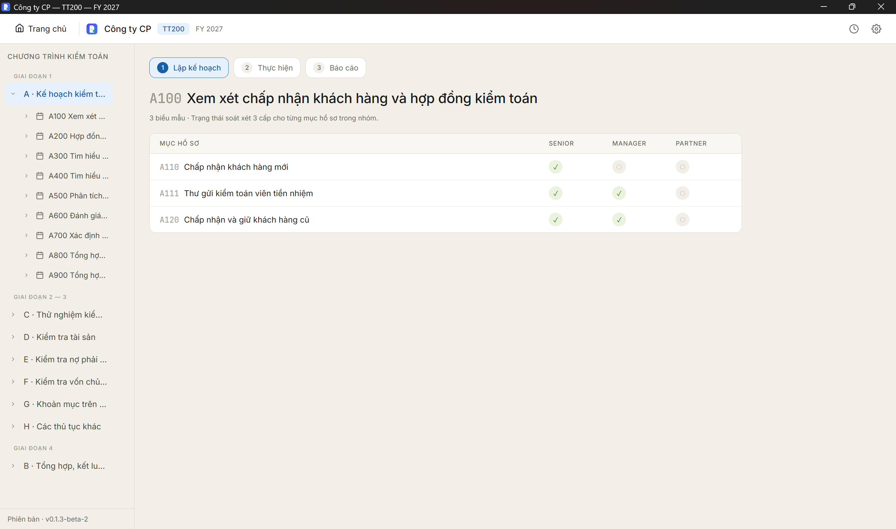
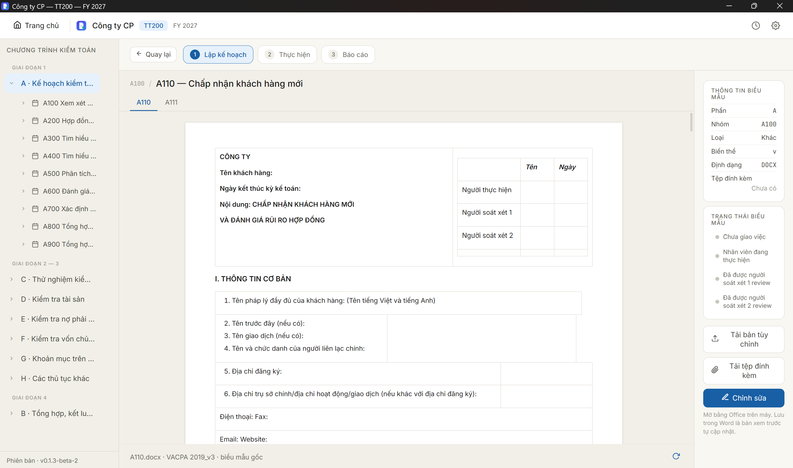

Offline hoàn toàn
Hồ sơ và thủ tục kiểm toán được xử lý ngay trên máy của bạn. Không cần Internet, không cần đăng nhập cloud.
KiToa là phần mềm kiểm toán chạy offline trên Windows. Lập kế hoạch, thực hiện và soát xét ba cấp theo quy trình VACPA, còn dữ liệu khách hàng không bao giờ rời khỏi máy bạn.
Hồ sơ và thủ tục kiểm toán được xử lý ngay trên máy của bạn. Không cần Internet, không cần đăng nhập cloud.
Không máy chủ trung gian, không gửi tệp đi đâu cả. Số liệu nhạy cảm của khách hàng chỉ nằm trong ổ đĩa của bạn.
Nhập tên khách hàng, ngành nghề, ngày kết thúc năm tài chính và chuẩn mực áp dụng. KiToa dựng sẵn bộ hồ sơ 9 phần (0, A đến H) từ biểu mẫu VACPA.
Bấm Chỉnh sửa để mở biểu mẫu bằng Office trên máy. Lưu trong Word, bản xem trước trong KiToa tự cập nhật. Cần mẫu riêng? Tải bản tùy chỉnh lên.




Giai đoạn 1 gồm chín nhóm hồ sơ từ A100 đến A900. Bạn bắt đầu bằng A100, xem xét chấp nhận khách hàng và hợp đồng kiểm toán, rồi đi tiếp xuống các nhóm sau.
Mỗi nhóm mở ra thành các biểu mẫu như A110, A111, A120, mỗi mục có trạng thái soát xét cho ba cấp.
Giai đoạn 2 và 3 gom các thủ tục theo đối tượng kiểm toán: kiểm tra tài sản, nợ phải trả, vốn chủ sở hữu, các khoản mục khác và những thủ tục còn lại.
Đính kèm bằng chứng vào từng biểu mẫu, mở Word để điền, lưu xong là bản xem trước cập nhật.
Giai đoạn 4 dành cho phần tổng hợp, kết luận. Đến đây, bảng soát xét cho bạn thấy ngay mục nào chưa qua cấp Manager hay Partner.
Trạng thái soát xét đi theo từng mục hồ sơ, nên không ai phải đoán hồ sơ đã được soát xét đến đâu.
Tải về, cài lên máy Windows và tạo hồ sơ đầu tiên trong vài phút. Không cần tài khoản cloud.
Windows 10/11, không cần kết nối Internet để sử dụng
Gửi email cho đội ngũ KiToa, chúng tôi sẽ trả lời trong 1 đến 2 ngày làm việc.